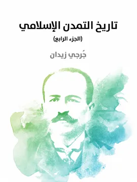

تاريخ التمدن الإسلامي (الجزء الرابع)

قراءة عربية أصلية محددة النطاق في الصفحات 9 إلى 14 من ملف PDF المرتبط، وليست تلخيصا كاملا للكتاب. نناقش ما تدعمه هذه المقاطع فقط.
خمسة عصور للتمدن الإسلامي: من العربي الأول إلى المغولي
يفتتح جرجي زيدان الجزء الرابع بمقدمة الموضوع: قسمنا تاريخ الإسلام باعتبار العناصر التي سادت فيه إلى دورين كبيرين: الدور الأول دور التمدن الذي نحن بصدده، يبتدئ بظهور الإسلام وينتهي بذهاب الدولة العباسية من العراق وتسلط المغول عليها؛ والدور الثاني هو النهضة السياسية التي حدثت بعد ذلك بتغلب الدولة العثمانية وإحياء الخلافة وظهور الدولة الصفوية. وقسم الدور الأول إلى خمسة عصور باعتبار تغلب أحد العناصر على سائرها: العصر العربي الأول من ظهور الإسلام إلى انقضاء الدولة الأموية سنة ١٣٢هـ، والعصر الفارسي الأول من قيام الدولة العباسية إلى خلافة المتوكل سنة ٢٣٣هـ، والعصر التركي الأول من خلافة المتوكل إلى تسلط الديلم سنة ٣٣٤هـ، والعصر العربي الثاني من قيام الدولة الفاطمية إلى انقضائها، والعصر المغولي من ظهور جنكيزخان إلى وفاة تيمورلنك. وينبه المؤلف إلى أنه لا يتيسر وضع حد فاصل بين هذه العصور؛ فيغلب أن تختلط أواخر كل عصر بأوائل الذي يليه، أما العصران التركي والفارسي الثانيان فخارجان عن دائرة بحثه في هذا الكتاب.
زاوية وحدود القراءة
قراءة موجزة من ص ٩ إلى ص ١٤ من أصل ٢٧٠ صفحة، تعرض مقدمة الكتاب، لا الكتاب كاملًا.
الطبعة والقراءة
هذه النسخة من الكتاب صادرة ومتاحة مجانًا من مؤسسة هنداوي بشكل قانوني؛ حيث إن نص الكتاب يقع في نطاق الملكية العامة تبعًا لقوانين الملكية الفكرية.
تنزيل PDF المجاني ↓ القراءة والمصدر الرسمي ↗